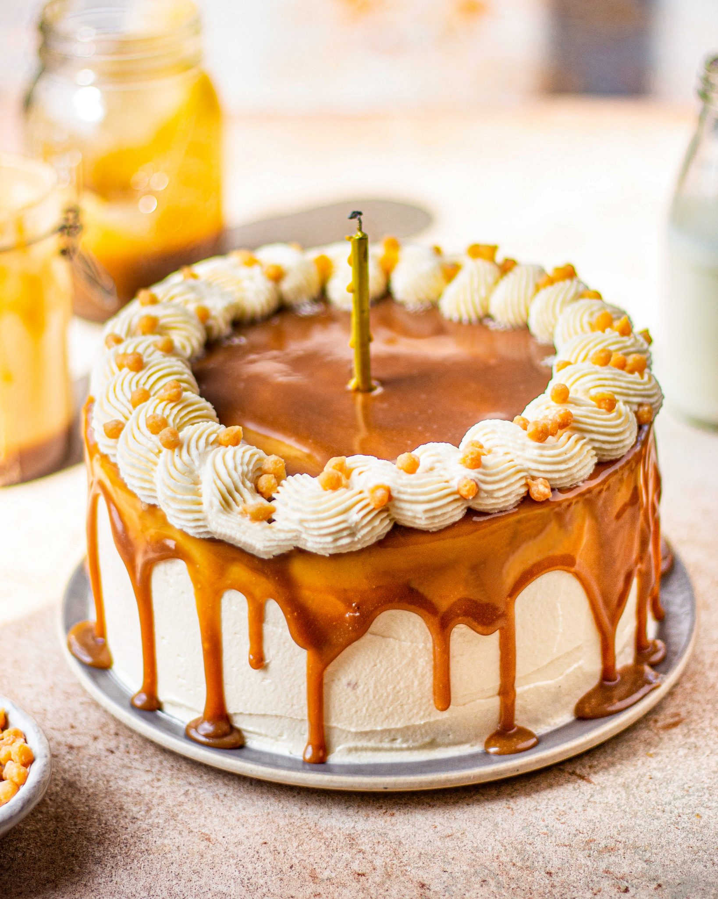

Butterscotch Cake

Butterscotch Cake
This Butterscotch Cake is a moist, from-scratch brown sugar cake topped with butterscotch buttercream made with melted butterscotch chips!
The cake is covered in more butterscotch chips and totally to die for!
Ingredients
- ½ cups all-purpose flour
- 3 ⅖ ounces butterscotch instant pudding mix
- 3 ½ teaspoons baking powder
- 1 teaspoon salt
- 2 cups unsalted butter (room temperature)
- 1 ½ cups light brown sugar (packed)
- 3 tablespoons vegetable oil
- 1 teaspoon vanilla extract
- 4 large eggs
- 1 ¼ cups milk
- 11 ounces butterscotch chips (melted)
- 6 ¼ cups powdered sugar
- ½ cup cream (or milk)
- 14 ounces butterscotch chips (for decorating)
Steps
- Preheat your oven to 350°F (175°C) and grease and flour three 8-inch round cake pans.
- In a large mixing bowl, combine the flour, butterscotch pudding mix, baking powder, and salt.
- In another bowl, cream together the butter, brown sugar, and vegetable oil until light and fluffy.
- Add the vanilla extract and eggs, one at a time, beating well after each addition.
- Gradually add the dry ingredients to the wet ingredients, alternating with the milk. Mix until well combined.
- Fold in the melted butterscotch chips.
- Divide the batter evenly among the prepared pans and bake for about 30-35 minutes or until a toothpick inserted into the center comes out clean.
- Let the cakes cool in the pans for 10 minutes, then remove them from the pans and cool completely on wire racks.
- For the frosting, beat together the powdered sugar, cream (or milk), and melted butterscotch chips until smooth and creamy.
- Once the cakes are completely cool, frost the layers and stack them. Press additional butterscotch chips onto the sides of the cake for decoration.
- Serve and enjoy this heavenly butterscotch creation!